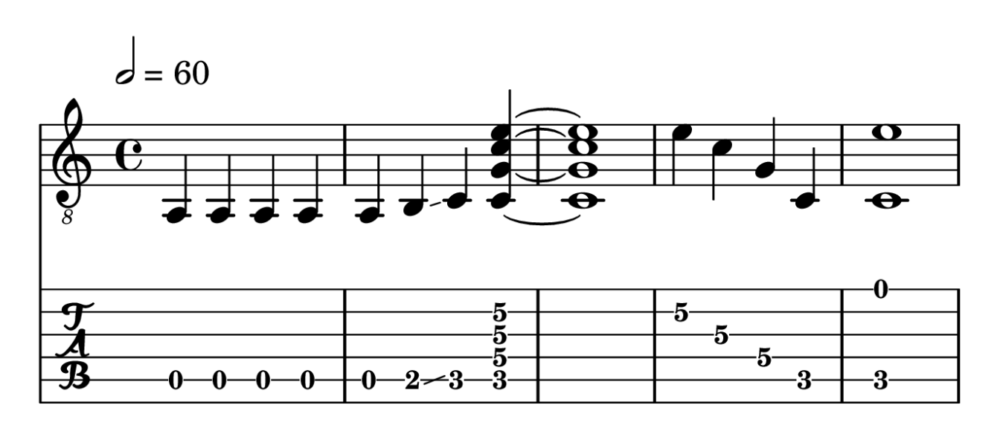

This section demonstrates how to create sheet music snippets in R markdown documents using the LilyPond backend. To do this, use the set of plot_music_* functions that wrap around the render_music_* functions.
These abstract the process of rendering a sheet music snippet to png and loading the rendered image back into R to be displayed as a plot in an open graphics device or inserted into an R markdown code chunk.
While these functions abstract away the details of the process, this is not the same as making the plot completely in R. R is only displaying the intermediary png file. LilyPond is required to engrave the sheet music.
For R markdown you can alternatively render the png using the corresponding render_music_* function and then place it in the document explicitly using knitr::include_graphics. See ?render_music for more details. Below are some example snippets for guitar and bass.
Music objects
g <- as_music("a,4;5*5 b,4- c4 cgc'e'~4 cgc'e'1 e'4;2 c';3 g;4 c;5 ce'1;51") b <- as_music("a,,4;3*5 b,,4- c,4 c,g,c~4 c,g,c1 c4;1 g,;2 c,;3 g,;2 c,c1;31") summary(g)
#> <Music string>
#> Timesteps: 14 (11 notes, 3 chords)
#> Octaves: tick
#> Accidentals: flat
#> Key signature: c
#> Time signature: 4/4
#> Tempo: 2 = 60
#> Lyrics: NA
#> Strings: 5 5 5 5 5 5 5 5432 5432 2...
#> Format: space-delimited time
#> Values: a,4 a,4 a,4 a,4 a,4 b,4- c4 <cgc'e'~>4 <cgc'e'>1 e'4 c'4 g4 c4 <ce'>1
summary(b)
#> <Music string>
#> Timesteps: 14 (11 notes, 3 chords)
#> Octaves: tick
#> Accidentals: flat
#> Key signature: c
#> Time signature: 4/4
#> Tempo: 2 = 60
#> Lyrics: NA
#> Strings: 3 3 3 3 3 3 3 321 321 1...
#> Format: space-delimited time
#> Values: a,,4 a,,4 a,,4 a,,4 a,,4 b,,4- c,4 <c,g,c~>4 <c,g,c>1 c4 g,4 c,4 g,4 <c,c>1
Snippet in R markdown chunk
The defaults for plot_music include treble clef and no tab staff. Plot the music object, g. As you can see, this appears off by an octave because the guitar transcription should use clef = "treble_8" instead of the default clef = "treble".
plot_music(g)

Above you can see the call to plot_music(g)in the document since echo = TRUE for the code chunk. In an interactive R session, this call draws the plot to the active graphics device. The R markdown code chunk for inserting the above plot into this document looks like this in the Rmd file.
```{r}
plot_music(g)
```The image will scale properly in R so that it does not distort. However, the graphics device dimensions still matter. If you want to avoid excessive whitespace for example, you may want to specify knitr figure options, e.g. fig.height=2, fig.width=7, globally or in a code chunk.
The values you choose depend on how tall your sheet music snippet is. If you enter a long snippet in code, LilyPond may wrap this around to multiple lines in the png file it creates. Therefore, this may require some trial and error. Sheet music snippets are intended to be curated one-offs for inserting in documents.
Additional wrappers
There are various wrapper functions offering convenient, sensible default arguments based on the function name.
plot_music_tab(g) # tab staff only
plot_music_guitar(g) # 8va treble clef for guitar, plus tab staff

plot_music_bc(b) # bass clef
plot_music_bass(b) # bass clef and tab staff

Depending on the function, additional relevant arguments include clef, tab, tuning and string_names. Layout arguments include header, paper, colors, transparent and res. The function plot_music_tc is equivalent to plot_music.